Лабораторная работа №2. Сайт научных конференций
Дисциплина: WEB-программирование
Выполнил: Криличевский Максим, группа K3339
Вариант: №5 — «Список научных конференций»
Дата проверки: 31 октября 2026 года
Цель работы
Освоить создание веб-приложения средствами Django: описать модель данных, реализовать формы и представления, подключить PostgreSQL, настроить авторизацию и разграничение доступа, вывести информацию через HTML-шаблоны.
Задание варианта №5
Разработать сайт, на котором представлены названия и тематики конференций, место и период проведения, описание конференции и места проведения, условия участия. Реализовать регистрацию пользователей, подачу, изменение и удаление собственных заявок на выступление, отзывы с оценкой от 1 до 10 и датами конференции. Предусмотреть управление результатами выступлений администратором и общую таблицу участников по конференциям.
Дополнительно реализованы CSS-оформление, поиск, пагинация и различие действий администратора и обычного пользователя в интерфейсе сайта.
Источник задания: методичка ЛР2, вариант №5. В данном отчёте описано приложение варианта №5.
Используемые средства и структура проекта
Приложение написано на Python с использованием Django 6.1.2. Рабочая база данных — PostgreSQL. Шаблоны обрабатываются встроенным движком DjangoTemplates; оформление выполнено собственным CSS. Отчёт оформлен в MkDocs с темой Material.
Расположение проекта в репозитории:
students/K3339/laboratory_works/Krilichevskiy_Maxim/
└── laboratory_work_2/django_lab2/
└── conferences_webapp/
├── manage.py
├── conferences_webapp/
│ ├── settings.py
│ └── urls.py
└── conferences/
├── models.py
├── forms.py
├── views.py
├── urls.py
├── admin.py
├── tests.py
├── migrations/
├── templates/conferences/
└── static/conferences/style.css
В архитектуре Django модель описывает данные, представление обрабатывает запрос и выполняет прикладную логику, шаблон формирует HTML-страницу. Маршруты в urls.py связывают адреса с обработчиками. Работа с PostgreSQL выполняется через ORM Django.
Модель данных
Используется стандартный пользователь Django и три модели приложения.
Conference — конференция
| Поле | Назначение |
|---|---|
title |
Название конференции |
location |
Место проведения |
start_date, end_date |
Даты начала и окончания |
topic |
Тематики в текстовом виде; несколько значений вводятся через запятую |
description |
Описание конференции |
venue_description |
Описание места проведения |
participation_terms |
Условия участия |
Тематики хранятся одной строкой, а не отдельным справочником. Поиск учитывает содержимое этого поля.
Registration — заявка на выступление
| Поле | Назначение |
|---|---|
user |
Пользователь, подавший заявку |
conference |
Конференция, на которую подана заявка |
presentation_title |
Название доклада |
description |
Описание доклада |
recommended |
Результат: рекомендован к публикации или не рекомендован |
Один пользователь может подать несколько заявок, одна конференция может иметь много заявок. Промежуточные записи Registration связывают пользователей и конференции и содержат сведения об их выступлениях. Внешние ключи настроены с on_delete=models.CASCADE.
Булево поле результата содержит два состояния. Отдельный статус «ещё не рассмотрено» в текущей модели не предусмотрен.
Review — отзыв
| Поле | Назначение |
|---|---|
user, conference |
Автор отзыва и конференция |
text |
Текст отзыва |
rating |
Оценка с валидаторами диапазона 1–10 |
conference_start_date, conference_end_date |
Даты конференции на момент создания отзыва |
created_at |
Дата и время создания отзыва |
Метод Review.save() при первом сохранении копирует даты конференции. При последующем изменении текста отзыва или переносе конференции сохранённый период не обновляется. Поля дат имеют editable=False и не запрашиваются в пользовательской форме.
Миграция 0005_review_conference_dates сначала добавляет поля с возможностью пустого значения, затем заполняет существующие отзывы и устанавливает обязательность полей. Для прежних отзывов берутся текущие даты конференций: исходные исторические значения до появления снимка отдельно не хранились.
Формы и обработка запросов
| Форма | Реализация | Поля пользователя |
|---|---|---|
| Регистрация аккаунта | RegisterForm, наследник UserCreationForm |
Имя пользователя и два поля пароля |
| Заявка на доклад | RegistrationForm, наследник ModelForm |
Название и описание доклада |
| Отзыв | ReviewForm, наследник ModelForm |
Текст и оценка |
При GET-запросе обработчик отображает форму. При POST создаёт форму на основе присланных данных, вызывает is_valid() и сохраняет запись при отсутствии ошибок. После успешного сохранения выполняется перенаправление на страницу конференции или каталог.
При создании заявки используется form.save(commit=False): автор и конференция присваиваются сервером до записи в БД. Поле recommended в пользовательскую форму не включено. Аналогично сервер задаёт автора отзыва, а модель автоматически сохраняет даты конференции.
Реализованные интерфейсы
Снимки сделаны 31 октября 2026 года с работающего локального сайта. Кадры личных заявок и административных действий получены после входа под учётной записью max. При съёмке формы не отправлялись и записи не изменялись.
Каталог конференций
Адрес: /conferences/. Представление conference_list выводит карточки с названием, местом и датами. Строка поиска фильтрует конференции по названию, тематике или месту. Условия объединены оператором OR с помощью Q.
Paginator разбивает результат поиска на страницы по 10 конференций. Сортировка по start_date и pk обеспечивает определённый порядок. Ссылки переключения страниц сохраняют поисковый запрос q.
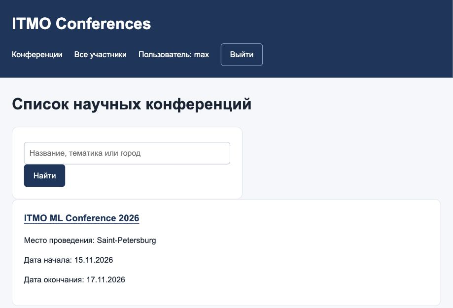
Рисунок 1. Каталог научных конференций и строка поиска.
Страница конференции
Адрес: /conferences/<id>/. Представление conference_detail выводит все описательные поля, личные заявки текущего пользователя, таблицу выступлений и отзывы. При отсутствии конференции возвращается ответ 404.
В интерфейсе выделены отдельные разделы: сведения о конференции, «Мои заявки», «Участники конференции» и «Отзывы о конференции». Действия оформлены кнопками, результаты — цветными отметками. Таблица допускает горизонтальную прокрутку на узких экранах.
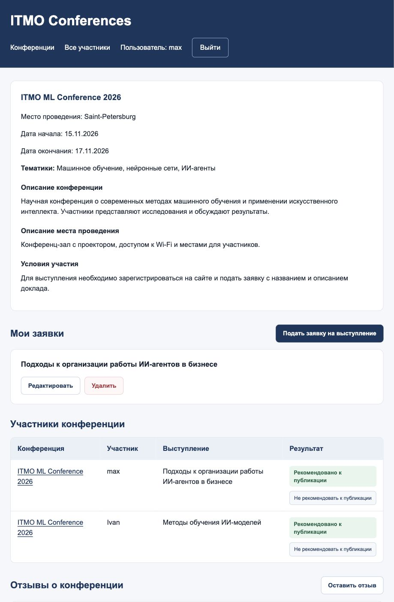
Рисунок 2. Страница конференции: описание, личная заявка и участники.
Регистрация, вход и выход
Адреса: /conferences/register/, /conferences/login/, /conferences/logout/.
После успешной регистрации выполняется автоматический вход. Для входа и выхода используются встроенные LoginView и LogoutView. Выход выполняется через форму методом POST. Настройка LOGIN_URL = "login" обеспечивает перенаправление гостя с защищённого действия на существующую страницу входа.
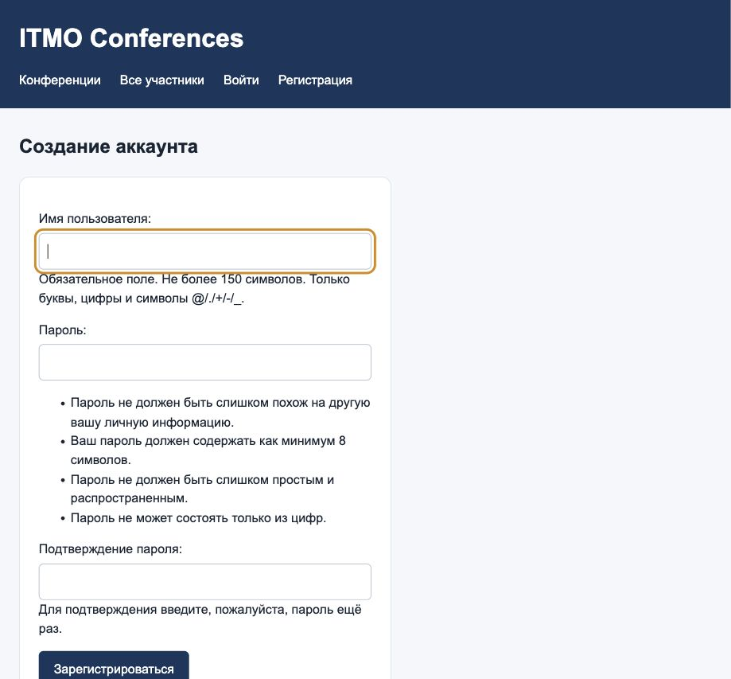
Рисунок 3. Форма создания аккаунта.
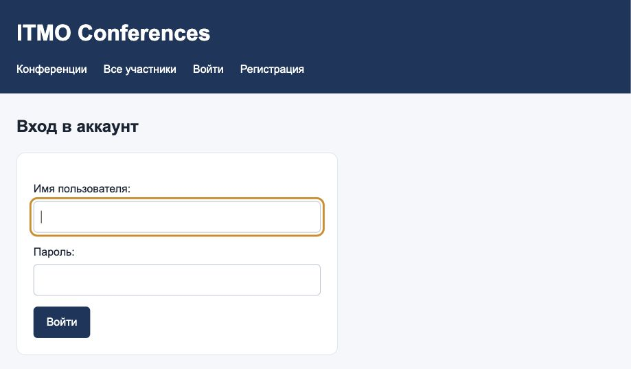
Рисунок 4. Форма входа в систему.
Подача и изменение заявки
Адрес подачи: /conferences/<id>/apply/. После входа пользователь вводит название доклада и его описание.
Редактирование: /conferences/applications/<id>/edit/. Выборка ограничена текущим автором:
application = get_object_or_404(
Registration, id=application_id, user=request.user
)
Таким образом, изменение чужой заявки запрещено даже при ручном вводе адреса. В форму редактирования передаётся instance=application, поэтому меняется существующая запись.
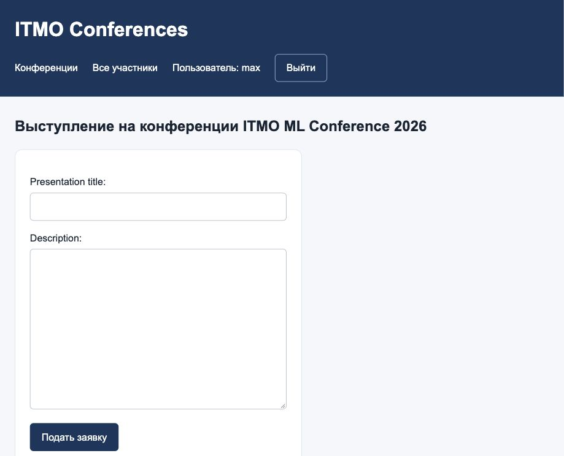
Рисунок 5. Форма подачи заявки на выступление.
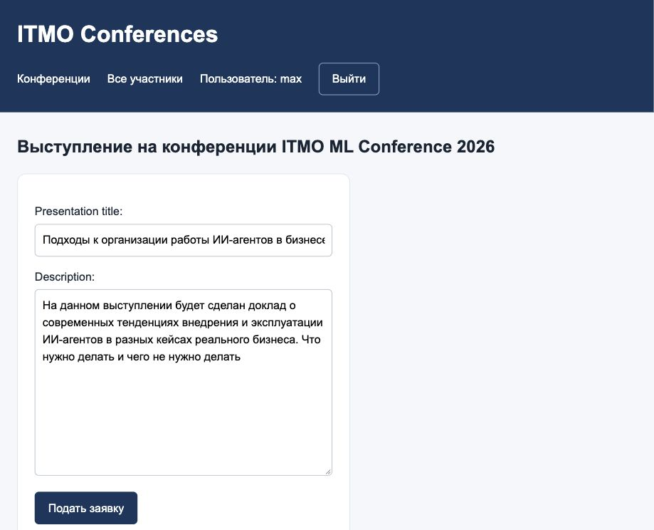
Рисунок 6. Редактирование собственной заявки.
Удаление заявки
Адрес: /conferences/applications/<id>/delete/. На GET отображается подтверждение. Удаление выполняется только после POST и только для собственной заявки. Обычный переход по ссылке не удаляет запись.
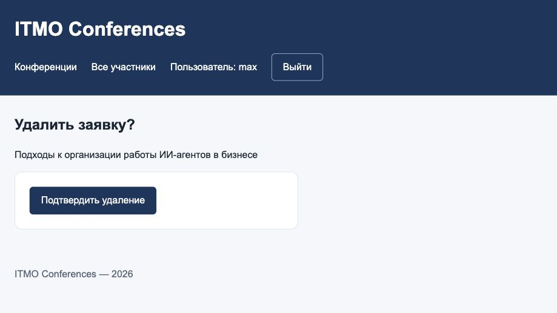
Рисунок 7. Подтверждение удаления собственной заявки.
Отзывы
Адрес формы: /conferences/<id>/review/. Зарегистрированный пользователь вводит текст и оценку. Значения за пределами 1–10 отклоняются формой. На странице конференции отображаются автор, сохранённый период конференции, оценка, текст и время создания. Отзывы отсортированы от новых к старым.
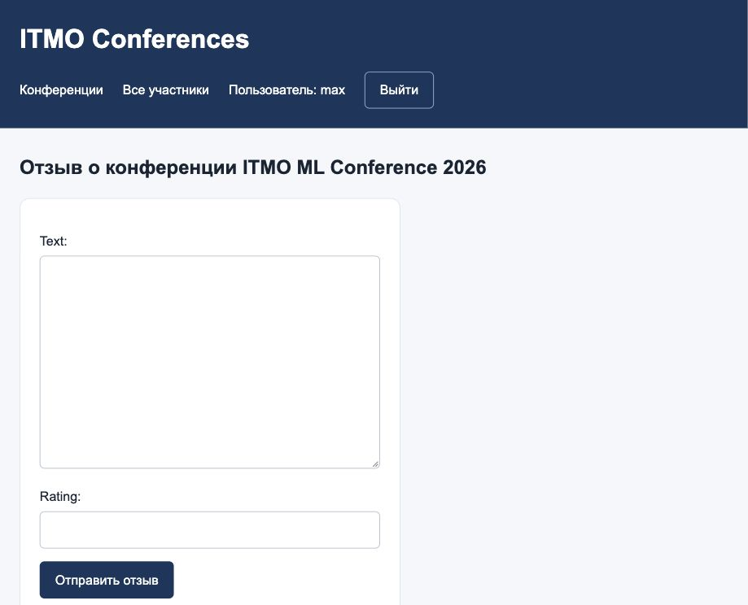
Рисунок 8. Форма добавления отзыва с оценкой.
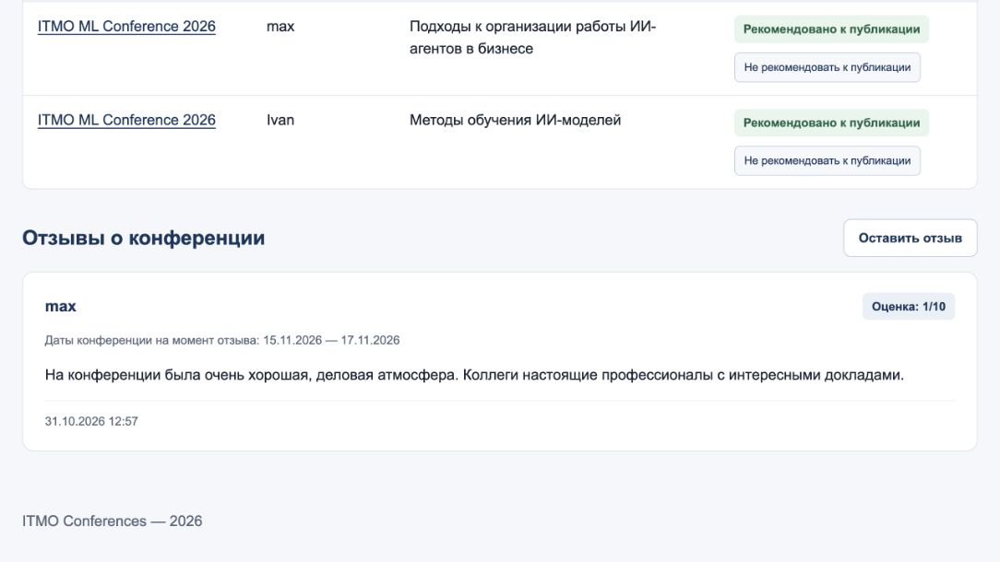
Рисунок 9. Отзыв с автором, оценкой и сохранёнными датами конференции.
Общая таблица участников
Адрес: /conferences/participants/. Представление participant_list показывает все заявки с названием конференции, именем автора, названием доклада и результатом выступления. Записи упорядочены по конференциям и участникам. Каждая строка соответствует выступлению, поэтому автор с несколькими докладами может встретиться несколько раз.
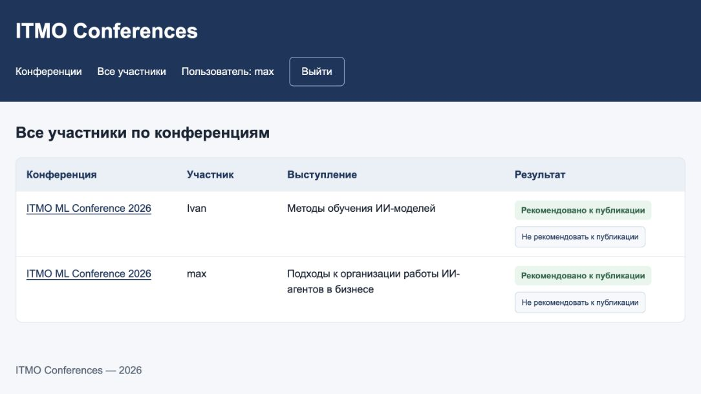
Рисунок 10. Общая таблица участников и действия администратора на сайте.
Управление результатами выступлений
В Django Admin для заявок настроены список, поиск, фильтрация и редактирование recommended прямо в списке.
На сайте staff/superuser видит кнопки рекомендации к публикации. POST отправляется на /conferences/applications/<id>/recommendation/. Обработчик set_recommendation проверяет авторизацию, роль, метод запроса и допустимость значения true/false. Применён require_POST; обычный пользователь получает 403 при попытке модерации.
В Django Admin также доступны конференции и отзывы. Даты отзыва отображаются как поля только для чтения.
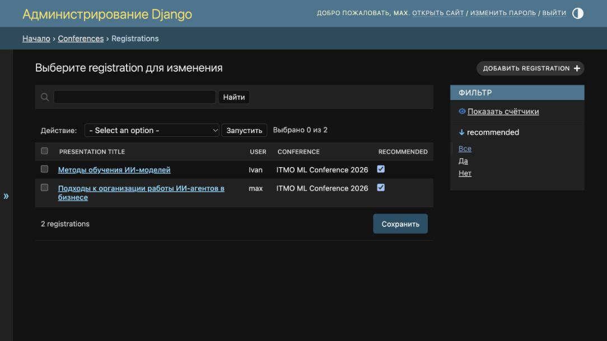
Рисунок 11. Изменение рекомендаций к публикации в Django Admin.
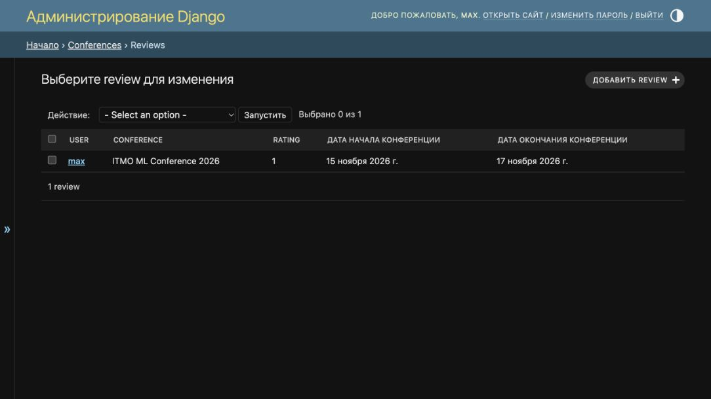
Рисунок 12. Отзывы и сохранённые даты конференций в Django Admin.
Права доступа
| Действие | Гость | Пользователь | Администратор сайта |
|---|---|---|---|
| Просмотреть каталог, конференции, участников и отзывы | Да | Да | Да |
| Создать аккаунт и войти | Да | Да | Да |
| Подать заявку и написать отзыв | Требуется вход | Да | Да |
| Изменить или удалить свою заявку | Требуется вход | Да | Да |
| Изменить или удалить чужую заявку через пользовательскую форму | Нет | Нет | Нет |
| Менять рекомендацию к публикации на сайте | Нет | Нет | Да, staff/superuser |
| Управлять записями через Django Admin | Нет | Нет | Staff с разрешениями либо superuser |
Скрытие кнопок в шаблоне используется для отображения доступных действий. Защита дополнительно реализована в серверных представлениях. POST-формы содержат CSRF-токены.
Комментарии в исходном коде
Классам и функциям добавлены русскоязычные строки документации, которые описывают их назначение. Комментарии объясняют проверки автора заявки, заполнение серверных полей, объединение условий поиска, сохранение периода отзыва и проверку результата модерации.
Тестовые методы также снабжены описаниями сценариев. Обновление комментариев не изменяет выполняемую логику; это проверено сравнением синтаксических деревьев Python без строк документации.
Проверка работоспособности
В приложении реализовано 17 автоматических тестов.
| Группа проверок | Проверяемое поведение |
|---|---|
| Авторизация | Регистрация, автоматический вход, выход, повторный вход, перенаправление гостя |
| Владение заявкой | Изменение своей заявки, запрет GET/POST к чужой заявке |
| Защита полей | Нельзя подменить автора, рекомендацию или даты отзыва через пользовательскую форму |
| Удаление | GET только показывает подтверждение, POST удаляет |
| Оценки | 0 и 11 отклоняются, 1 и 10 принимаются |
| Страницы | Вывод описаний, таблица участников, поиск и пагинация |
| Модерация | Ограничение staff/superuser, запрет GET, проверка входных значений, оба результата |
| CSRF | Изменяющие запросы без токена отклоняются |
| Снимок периода | Копирование дат, неизменность старых дат и новые даты для новых отзывов |
| Перенос данных | Миграция сохраняет текст, автора и оценку существующего отзыва и заполняет даты |
После добавления комментариев все 17 тестов успешно выполнены на временной SQLite. При проверке применяются все миграции приложения, включая отдельный сценарий перехода с 0004 на 0005.
В рабочей PostgreSQL ранее применена миграция 0005; проверены заполнение дат и сохранность существующего отзыва. Итоговая проверка PostgreSQL после документирования приведена ниже.
Итоговая проверка: 17 из 17 тестов прошли на отдельной PostgreSQL-базе. Тестовая база создана с уникальным именем и удалена после завершения. Сценарий миграции старого отзыва также выполнен на PostgreSQL. Количество конференций, заявок и отзывов в рабочей базе до и после проверки совпадает.
Результат запуска:
Ran 17 tests
OK
System check identified no issues (0 silenced).
Команды проверки в окружении проекта
Из папки с manage.py после активации окружения:
python manage.py check
python manage.py makemigrations --check --dry-run
python manage.py showmigrations conferences
python manage.py test conferences --verbosity=2
Последняя команда использует отдельную тестовую базу PostgreSQL. Учётной записи СУБД нужны права для её создания. Рабочая база не является тестовой базой.
Запуск приложения и отчёта
В папке django_lab2 активировать существующее окружение и перейти к manage.py:
source .venv/bin/activate
cd conferences_webapp
Файл .env рядом с manage.py содержит локальные параметры подключения DB_NAME, DB_USER, DB_PASSWORD, DB_HOST и DB_PORT. Секретные значения в отчёт не включаются.
Подготовка базы и запуск:
python manage.py migrate
python manage.py createsuperuser
python manage.py runserver
Создавать суперпользователя нужно при первоначальной настройке. Каталог доступен по адресу http://127.0.0.1:8000/conferences/, административная панель — http://127.0.0.1:8000/admin/.
Для сборки отчёта из корня репозитория в окружении с установленными MkDocs и темой Material:
mkdocs build --strict
mkdocs serve
Страница отчёта включена в раздел «ЛР2» навигации сайта документации.
Вывод
Реализовано приложение варианта №5: каталог научных конференций, регистрация пользователей, управление собственными заявками, отзывы с оценками и сохранёнными датами, результаты выступлений и таблица участников. Серверные проверки разграничивают доступ пользователей и администраторов. Поиск, пагинация и CSS-оформление обеспечивают работу с каталогом и таблицами. Автоматические тесты проверяют основные сценарии, права доступа и миграцию данных.